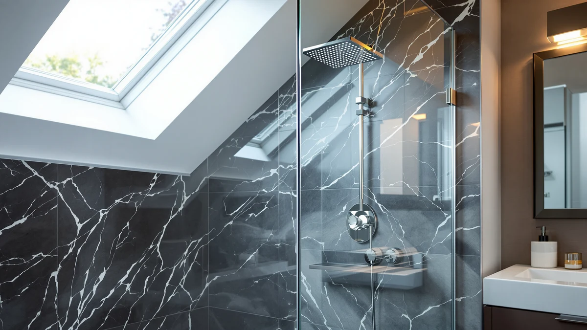

How to Install Shower Door (2026)
Prices and picks verified as of September 2026. Independent, reader-supported reviews.


Things to Know Before You Buy
- A door frame that's out of level by even a quarter inch can bind a sliding panel or leave a pivot door swinging open on its own.
- Alcove and sliding doors typically bolt to tile or a fiberglass surround, while frameless pivot doors clamp directly to the glass panel with hinges anchored into the wall stud.
- Plastic shims correct for walls that aren't perfectly plumb, and most kits include a few, but out-of-square openings may need extras from the hardware store.
- Silicone caulk needs 24 hours to cure before the shower gets used, so plan the install for a day when the bathroom can sit unused overnight.
- Reviewers who skip the pre-drill dry-fit step are the ones most likely to report cracked tile or misaligned tracks once the hardware goes in for real.
How to install shower door hardware comes down to five steps: measure the opening, prep the surface, mount the track or hinges, hang the panel, then seal every edge against water. Most alcove and neo-angle doors ship with a mounting kit that a homeowner with basic tools can put in over a weekend afternoon, without hiring a plumber or glass installer.
The steps below follow the process laid out in manufacturer installation guides for framed, semi-frameless, and frameless doors, cross-checked against what verified buyers report running into during their own installs. Skipping the leveling step or rushing the caulk cure is where most DIY jobs go wrong, so we've flagged those spots as you go. Below you'll find the tools and supplies to gather first, the five-step process, and the mistakes that turn a solid afternoon project into a leaky one.
What You'll Need
- Supplies: 100% silicone caulk, stainless mounting screws and wall anchors, and plastic shims
- Tools: a power drill, a 4-foot level, a tape measure, and a caulk gun
Step 1: Measure the opening and pick your door type
Start by measuring the opening at the top, middle, and bottom, since older tile and fiberglass surrounds are rarely perfectly square. Write down the smallest width you find, since that's the measurement the manufacturer's sizing chart cares about, and most shower door kits allow only a half inch or so of adjustment on either side.
Hold a level against each wall to check for plumb, and note any spots where the wall bows in or out. This is also when you decide on door type: sliding doors work best for narrow bathrooms where a swinging panel would hit the toilet or vanity, while pivot and hinged doors need clearance to open outward. Frameless glass runs heavier and needs a stud or solid backing behind the wall anchors, so a stud finder is worth a few minutes before you commit to a layout.
Step 2: Prep the opening and dry-fit the hardware
Take out the old shower door or curtain rod and scrape away any leftover caulk or adhesive residue, since new silicone won't bond well over old sealant. Wipe the tile or fiberglass down with rubbing alcohol so the surface is free of soap film, which is one of the most common reasons a fresh caulk line fails within a few months.
Hold the track, frame, or hinge plates in place exactly where they'll be mounted and mark each screw hole with a pencil before drilling. This dry-fit step catches spacing problems while they're still easy to fix. It's the step reviewers who report a smooth install almost always mention doing, and the one that gets skipped most often by people in a hurry.
Step 3: Mount the track or hinges to the wall
Drill through your marked points, using a masonry bit if you're going through tile. Insert wall anchors anywhere the screws aren't landing on a stud, since drywall alone won't hold the weight of a glass door over time. Frameless pivot doors put more strain on their two or three hinge points, so those need a stud or a heavy-duty anchor rated for the door's full weight, listed on the packaging.
Set the track or hinge plate against the wall and drive the screws partway before checking level again, then finish tightening once everything lines up. A track that's off by even a small amount will make a sliding panel drift on its own or bind halfway through its path, so it's worth the extra few minutes to get this part right the first time.
Step 4: Hang the door panel and check the swing
With a second person supporting the glass, since most panels run 30 to 50 pounds, lower the panel into the top track or line up the hinge pins and let it settle into place. Sliding doors usually need the rollers adjusted so the panel hangs evenly and doesn't drag along the bottom track; most rollers have a small set screw for this.
Open and close the door through its full range before tightening any final screws. A pivot door should swing freely without scraping the frame, and a sliding panel should glide without catching. If something binds, loosen the hardware slightly and recheck the level on the track rather than forcing the glass, since frameless panels crack under uneven pressure.
Step 5: Seal the edges and test for leaks
Run a continuous bead of 100% silicone caulk along the vertical seams where the frame or glass meets the wall, and smooth it with a wet finger or a caulk tool for a clean line. Leave the bottom edge of the threshold or track unsealed on one small section if the door design calls for weep holes to drain water back into the shower, since fully sealing those can trap water instead of releasing it.
Let the caulk cure for a full 24 hours before using the shower. Once it's dry, run the water for a few minutes and check the floor outside the door and the wall seams for any dampness. A slow leak at this stage almost always traces back to a gap in the caulk line or a track that isn't quite level, both of which are easy to fix now versus after the surrounding floor takes water damage.
Common Mistakes to Avoid
The mistake that shows up most in owner reviews is skipping the dry-fit step and drilling straight into the wall, which leaves screw holes in the wrong spot once the panel doesn't sit right. A second hole an inch away weakens tile or fiberglass and looks worse than taking the extra ten minutes to mark and check first.
Forcing an out-of-square opening is another common trap. Shimming behind the track or hinge plate fixes small gaps, but pushing a frame into place without shims puts constant pressure on the glass, and pivot doors especially will crack under that stress within months rather than years.
Using the wrong caulk causes problems too. Painter's caulk or an acrylic sealant looks fine going on but breaks down fast in constant moisture, so 100% silicone is worth the extra couple of dollars at the hardware store. Skipping weep holes on doors designed with them traps water inside the track instead of draining it, which speeds up mold growth along the bottom rail.
Last, rushing the caulk cure time is the fastest way to undo a clean how to install shower door project. Water exposure within the first 24 hours keeps the silicone from bonding fully, and a bead that never cures properly will need to be scraped out and redone. A day without showering is a small cost against redoing the whole seal.
Our Top Picks
If your old door is too damaged to reuse, or you're starting from a curtain and building the frame out for the first time, these are the shower doors we'd shortlist for the job below, based on fit, hardware quality, and what verified buyers report after their own install.

Editor's Pick
GroGro 56-60" W x 71"
A sliding frameless design sized for 56 to 60 inch openings, with a track kit that reviewers consistently note is straightforward to level and mount without extra hardware runs to the store.
$493.90
Check Price on Amazon
Best Value
EASYWORC Frameless Pivot Shower Door
A pivot-hinge door that keeps the price well under most frameless competitors while still using tempered glass and metal hinges rated for daily use, according to verified buyer feedback.
$269.89
Check Price on Amazon
Premium Choice
GroGro 44-48" W x 71"
The same hardware and build as the 56-60 inch version scaled down for narrower 44 to 48 inch openings, a fit smaller bathrooms often can't find in frameless sliding doors.
$399.90
Check Price on AmazonFrequently Asked Questions
How long does it take to install a shower door yourself?
Most alcove and sliding doors take about 3 hours from removing the old curtain or door to the final caulk bead, though frameless pivot doors with heavier glass can run closer to 4 hours with a second person helping hold panels in place.
Do you need a plumber to install a shower door?
No. A shower door installation doesn't involve any plumbing work since the hardware mounts to the wall and glass, not the water lines. A drill, a level, and basic hand tools cover the whole job for most framed and sliding doors.
What size shower door do I need?
Measure your opening at the top, middle, and bottom and use the smallest width, since most manufacturer sizing charts only allow a half inch of adjustment. An opening between two sizes usually calls for sizing down and shimming rather than forcing an oversized panel to fit.
Can you install a shower door over tile without removing it?
Yes, as long as the tile surface is flat and level enough for the track or hinge plates to sit flush. Uneven grout lines or raised tile edges may need shims behind the hardware, and anchors should still land in a stud or solid backing wherever possible.
Why is my new shower door leaking at the bottom?
A leak at the base almost always means the threshold or track isn't level, the caulk didn't fully cure before use, or a weep hole is blocked instead of draining. Recheck the level along the bottom track first, since even a slight tilt sends water outside the pan instead of back in.
Verdict
How to install shower door hardware yourself comes down to careful measuring, a dry-fit before anything gets drilled, and patience during the caulk cure, not any special tool or skill most homeowners don't already have. The five steps above, measuring the opening, prepping the surface, mounting the track or hinges, hanging the panel, and sealing every seam, cover framed, frameless, sliding, and pivot doors alike, with the main differences showing up in hardware weight and clearance needs rather than the process itself. Skipping the dry-fit or rushing the 24-hour cure time causes most of the leaks and misalignments owners report after a DIY install, so those two steps are worth the extra care even when the rest of the job goes fast. If your old door is too far gone to reuse, a GroGro frameless sliding door is a solid starting point for a straightforward mount, sized to fit 44 to 60 inch openings depending on the model. For most bathrooms, a weekend afternoon and the tools listed above are all it takes to finish the job.